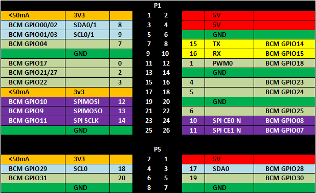
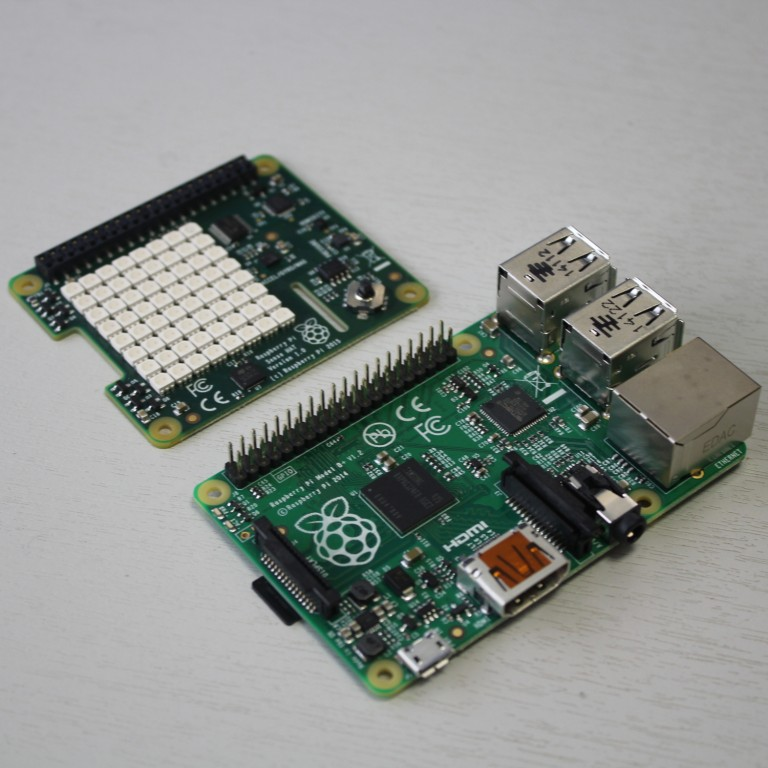
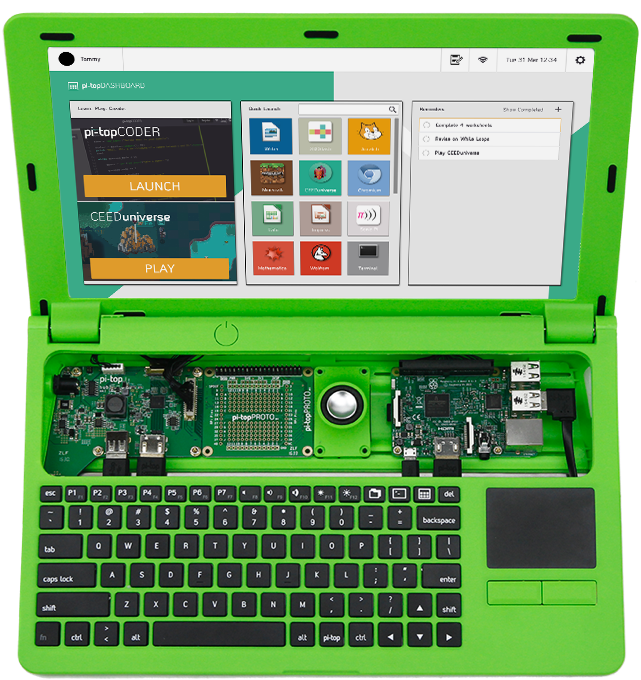

Interfaces:
Raspberry Pi & Kivy
#pyDayTF
Alberto Morales
Raspberry Pi
Raspberry Pi - ¿Que es?
Comenzó a diseñarse en 2006 en Computer Lab de la Universidad de Cambridge
Se lanza en 2012 a través de la Fundación Raspberry Pi
Modelos:
- A: Tamaño estandar, sin ethernet.
- B: Tamaño estandar, con ethernet.
- Compute module: dimensiones especiales.
- Zero: más pequeña y menos conectores
Sistema operativo oficial Raspbian (basado en Debian GNU/Linux)
Lenguaje oficial Python
Raspberry Pi - Especificaciones
Para la Raspberry Pi 3B (Febrero 2016, 35 USD)
- SOC (system on a chip): Broadcom BCM2837
- CPU: 1.2 GHz 64-bit quad-core ARM Cortex-A53
- GPU: Broadcom VideoCore IV @ 250 MHz (1080p60)
- RAM: 1 GB compartida con GPU
- USB: 4 puertos 2.0
- Red: 10/100 ethernet, wifi 802.11n y bluetooth 4.1
- Salidas: Audio analógico estéreo, HDMI, video composite, LCD DSI
- GPIO: 17 pines y puerto para cámara
- Consumo: 4W (5V 800mA)
Raspberry Pi - GPIO
Este es el diagrama del patillaje los puertos de E/S de proposito general GPIO
Raspberry Pi - RPi.GPIO
Este trozo de código python hace un bucle para comprobar si se están pulsando los botones conectados a los pines 23 y 24
import RPi.GPIO as GPIO
GPIO.setmode(GPIO.BCM)
GPIO.setup(23, GPIO.IN, pull_up_down = GPIO.PUD_DOWN)
GPIO.setup(24, GPIO.IN, pull_up_down = GPIO.PUD_UP)
while True:
if (GPIO.input(23) == 1):
print(“Button 1 pressed”)
if (GPIO.input(24) == 0):
print(“Button 2 pressed”)
GPIO.cleanup()
Raspberry Pi - astro-pi
Sense HAT+Flight Case para lanzar una Raspberry Pi al espacio.
Proyecto de la Agencia Espacial Británica de finales del 2014 https://astro-pi.org/
Competición lanzada en colegios de UK para programarla. En python.
El premio: ejecutar el código en la Estacion Espacial Internacional ISS.
Raspberry Pi - pi-top
Portatil DIY basado en Raspberry Pi
Crowdfounding de finales del 2014 en indiegogo (217%)
Kivy
Kivy - ¿Qué es?
Es un framework en python para elaborar aplicaciones multitouch para moviles
Las aplicaciones elaboradas funcionan, sin cambiar el código fuente, en:
Android | IOS | Linux | OSX | Windows

Kivy - Primer paso
Esta es la aplicación más básica. Una etiqueta que ocupa toda la ventana.
import kivy
kivy.require('1.9.1') # replace with your current kivy version !
from kivy.app import App
from kivy.uix.label import Label
class MyApp(App):
def build(self):
return Label(text='Hello world')
if __name__ == '__main__':
MyApp().run()
Descargar el fichero y llamarlo paso1.py
Ejecutarlo con python paso1.py
Kivy - Segundo paso
Descargar paso2a.py
- Usamos un GridLayout para organizar Buttons en una cuadrícula de 3x3.
- Con la función add_widget agregamos botones en el padre
- Los botones podemos configurarlos en el constructor, o bien una vez construidos
- Hemos definido un evento usando la propiedad on_press
- Ejecutarlo con
python paso2a.py
Vemos que escribir la interfaz en python se complica fácilmente.
Aunque en paso2b.py vemos una ventaja de python para hacer interfaces monótonas (poder usar bucles!)
Kivy - Tercer paso
- Interfaz en fichero aparte, escrito en Lenguaje KV que tiene una sintaxis parecida a YAML
- En el fichero kv definimos las clases gráficas que necesitemos. Los nombres <EntreAngulos> son nuestros, el resto de kivy.
- En el fichero py definimos las clases que necesitemos para eventos. Debe coincidir el nombre con el <EntreAngulos> del kv.
- El nombre de la aplicación LoqueseaApp predetermina el nombre del fichero KV loquesea.kv
- Ejecutarlo con
python paso3.py
Kivy - Cuarto paso
- Maquetando una interfaz más compleja con varios GridLayouts y un reproductor de Video
- Vemos que toda la complejidad de la interfaz se queda en el KV y el código python nos queda bastante limpio
- El lenguaje KV permite ejecutar one-liners de python para las propiedades, lo que evita tener que escribir métodos triviales en el .py
- Ejecutarlo con
python paso4.py